A selected feature in partnership with My Miyakojima
My Miyakojimaとの提携掲載
May 2026 | 2026年5月
Mica Umeyama
梅山 海花（ウメヤマ ミカ）
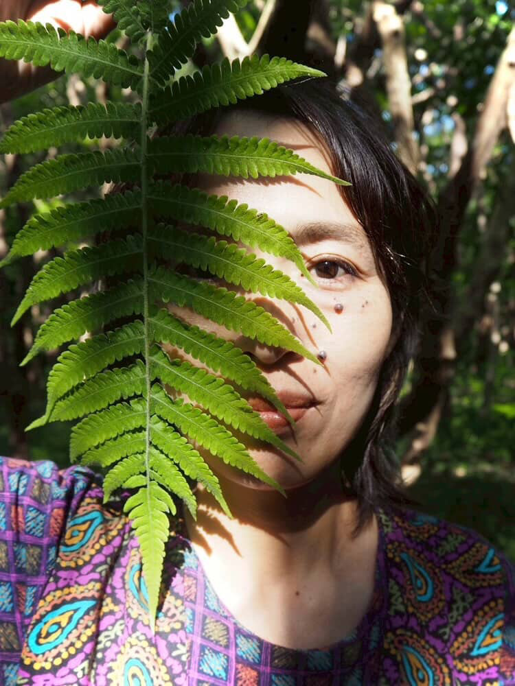
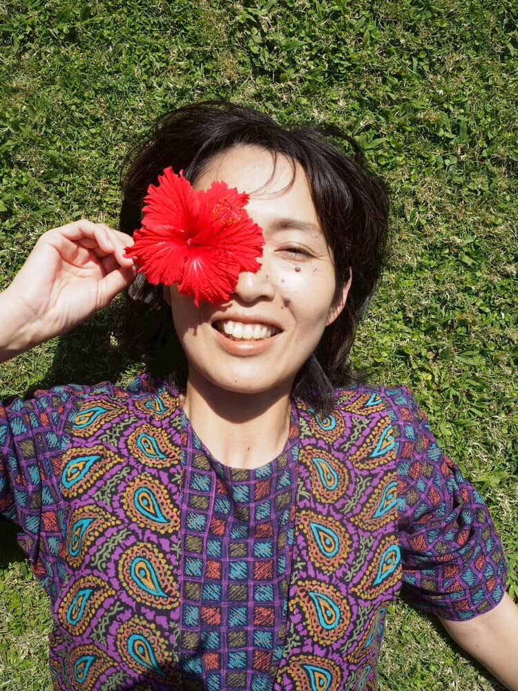
Why We Featured This Storyこのストーリーを紹介する理由
Selected for the calm, personal feeling of the salon and the way Mica's story reflects connection, care, and a life slowly shaped by Miyakojima.
サロンの落ち着いた空気感と、Micaさんのストーリーにある人とのつながり、丁寧さ、宮古島で少しずつ形になっていく暮らしを大切に紹介しています。
宮古島には、最初から決められたものではなく、タイミングやご縁、そしてその場所とのつながりの中で、静かに始まるストーリーがあります。
Micaのストーリーも、そんな形で始まりました。
もともとは3ヶ月の滞在の予定だった宮古島。
現地のサロンとの出会いをきっかけに、その時間は少しずつ延びていき、気づけば“短い滞在”は、新しい暮らしへと変わっていきました。
宮古島の自然に囲まれながら、彼女は自分にとって心地よいリズムを見つけていきます。
いつもすぐ近くにある海は、静かに心を整えてくれる存在で、日々変わる光や景色は、彼女の感覚や仕事にも影響を与えています。
ここに来る前は、宮古島で暮らすことや、自分のサロンを持つことは、想像もしていなかったそうです。
でも、場所によって人生は静かに変わっていくもの。
現在は、自身のサロンを立ち上げ、その空間は彼女の価値観そのものを映しています。
特に、自然なハイライトの技術に定評があり、一人ひとりに合わせたスタイルを丁寧に仕上げています。
光が差し込むやわらかな空間の中で、訪れる人がリラックスできる時間を大切にしています。
忙しい日常の中で、少し立ち止まり、自分のための時間を過ごせる場所として、静かな存在感を持つサロンです。
そしてこのストーリーは、少しだけ個人的なものでもあります。
Micaは、My Miyakojimaのファウンダーにとって、宮古島で出会った最初の友人のひとりであり、この島を好きになるきっかけをくれた存在でもあります。
こうした人とのつながりの中で、宮古島はただの「訪れる場所」ではなく、人生が重なっていく場所になっていく。
My Miyakojimaは、そんな想いを大切にしながら発信しています。
In Miyakojima, stories don’t always begin with a plan. They quietly unfold through timing, connection, and a sense of place.
Mica’s story began in that way.
She originally came for what was meant to be a short, three-month stay.
But through her connection with a local salon, that time slowly extended, and before she knew it, that “short stay” became a new life.
Surrounded by nature, she found a rhythm that felt right for her.
The nearby ocean became a quiet presence, while the changing light and scenery began to influence her work and creative sense.
Before coming here, she never imagined living in Miyakojima or opening her own salon.
But sometimes, a place gently changes your life.
Today, she has created her own space — a salon that reflects her values and way of being.
She is especially known for her natural highlights, carefully tailored to each individual.
Within a soft, light-filled space, she creates an atmosphere where people can truly relax.
It is a place to pause, to breathe, and to reconnect with yourself.
And this story is also a little personal.
Mica was one of the first people the founder of My Miyakojima met on the island — and someone who helped shape their connection to Miyakojima.
Through connections like these, Miyakojima becomes more than just a place to visit — it becomes a place where lives begin to intertwine.
My Miyakojima shares stories like this, with care and intention.
Micaは宮古島で活動するヘアスタイリストであり、サロン「Sanin」のオーナーです。
自然なハイライトを得意とし、一人ひとりに寄り添ったスタイルを丁寧に提案しています。
彼女のサロンは、リラックスできる空間と心地よい時間を大切にした、温かみのある場所です。
Mica is a hairstylist based in Miyakojima and the owner of Sanin salon.
She is known for her natural highlights, carefully tailored to each client.
Her salon offers a calm, welcoming atmosphere where people can relax and feel at ease.
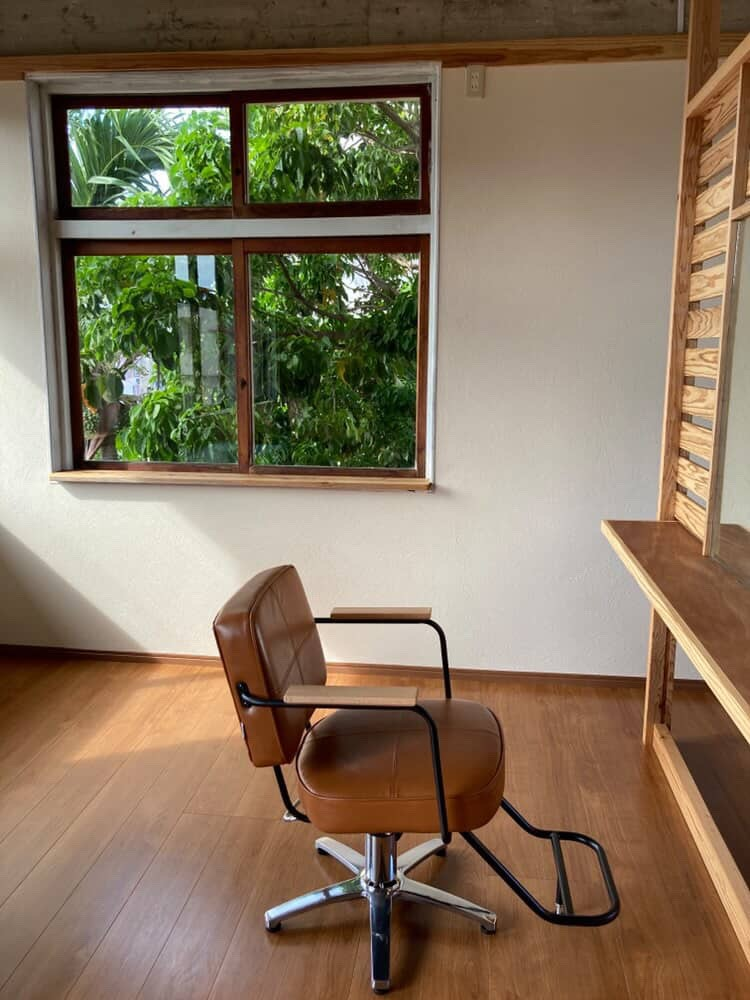
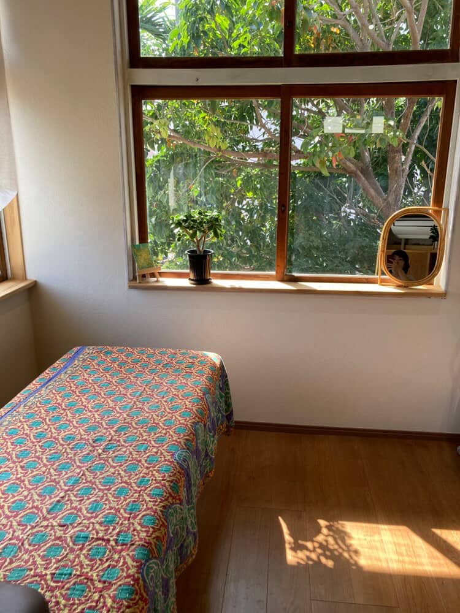
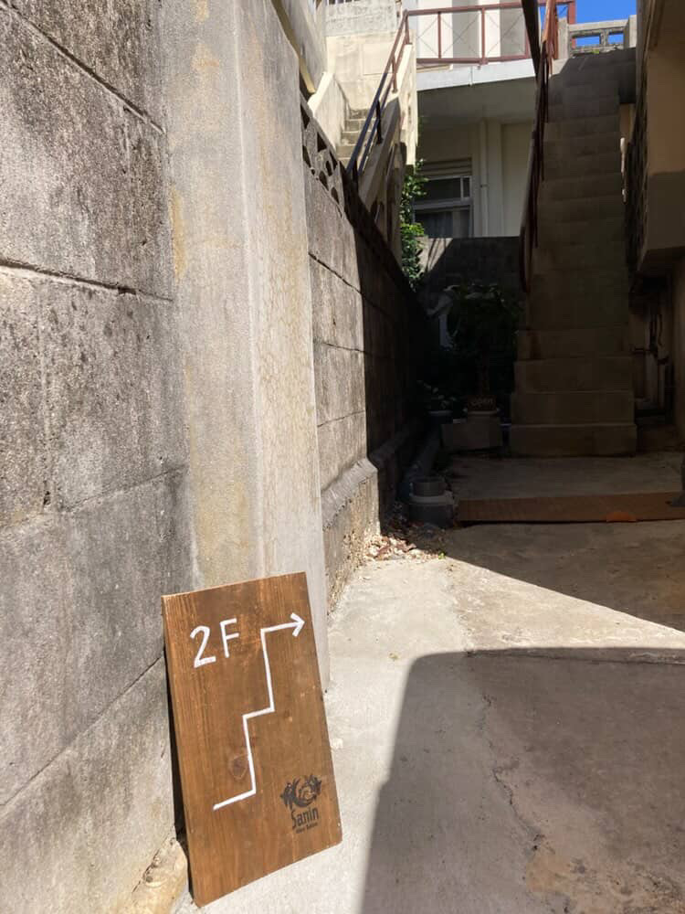
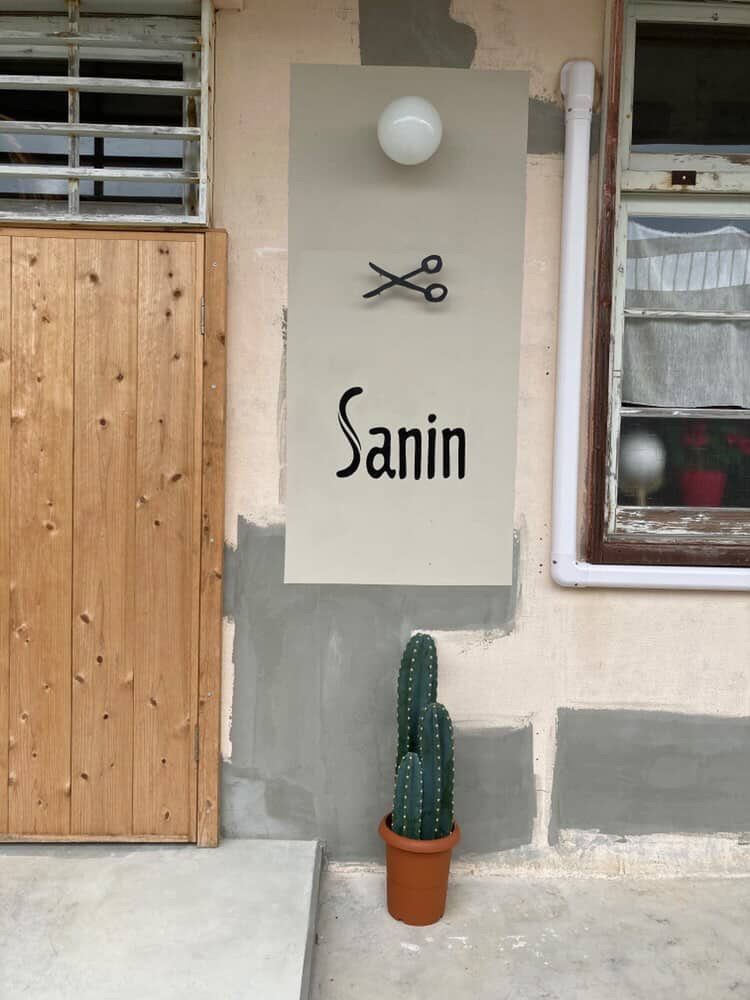
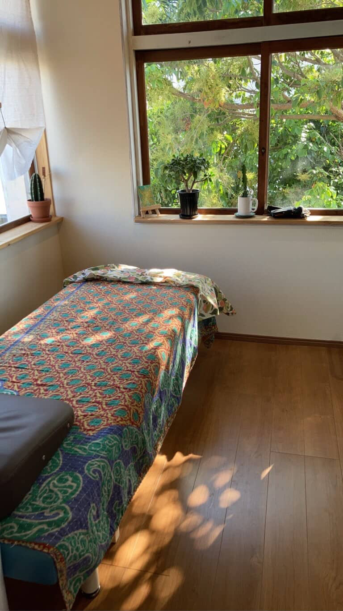
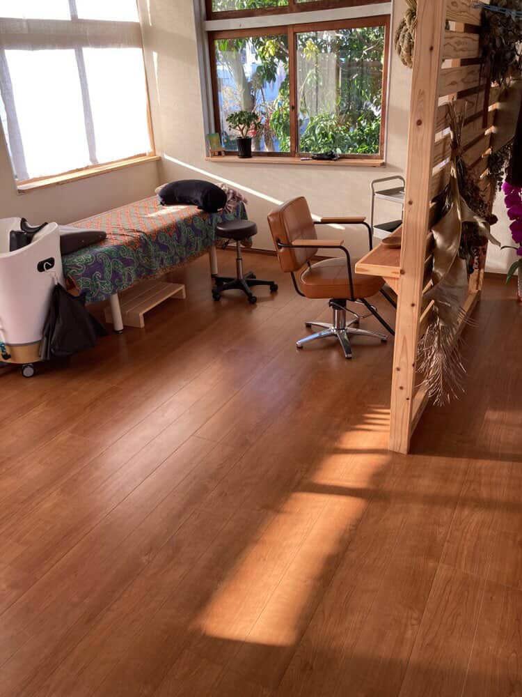
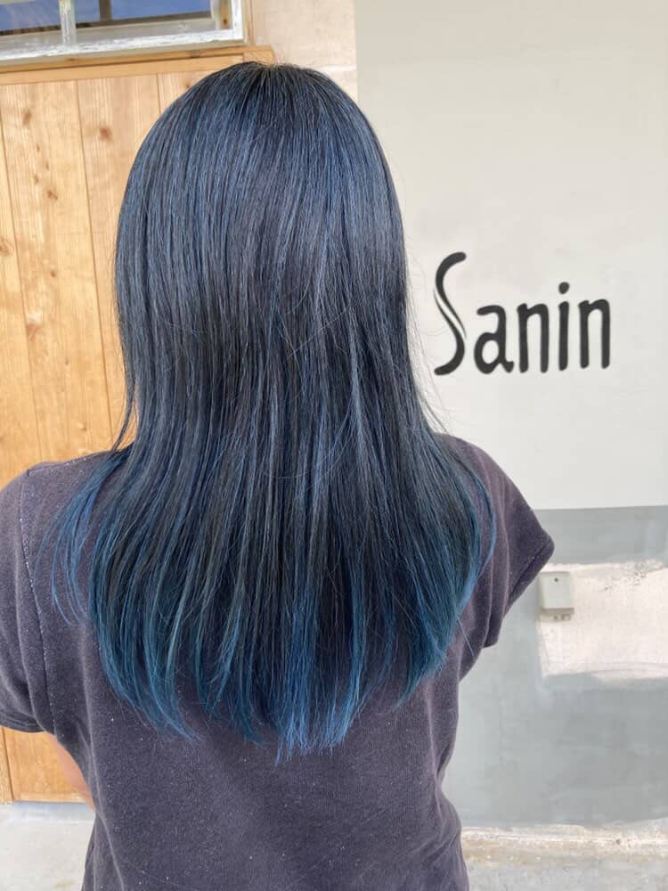
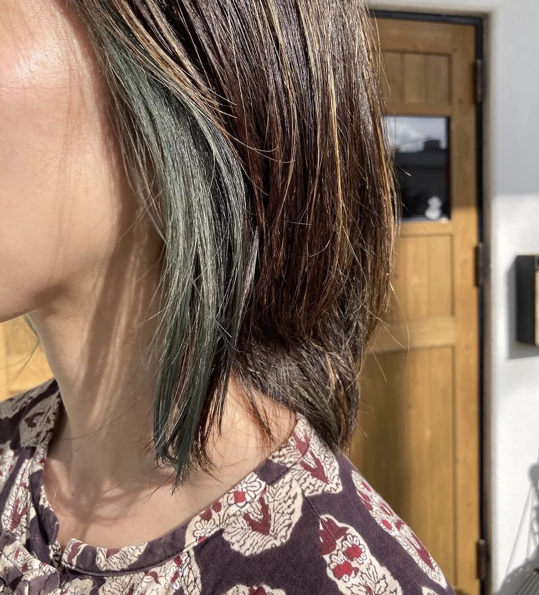
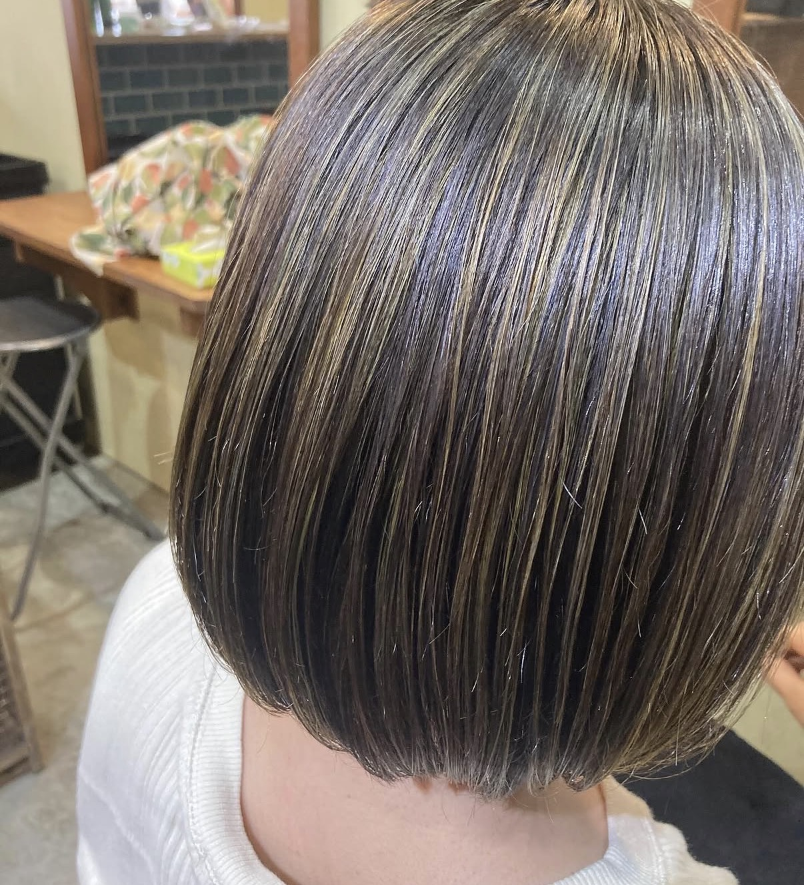
つながる
Book or inquire directly here.
ご予約・お問い合わせはこちらから可能です。
📷 Instagram インスタグラム 💬 LINE LINEで予約・お問い合わせ 📍 Location 場所を見る